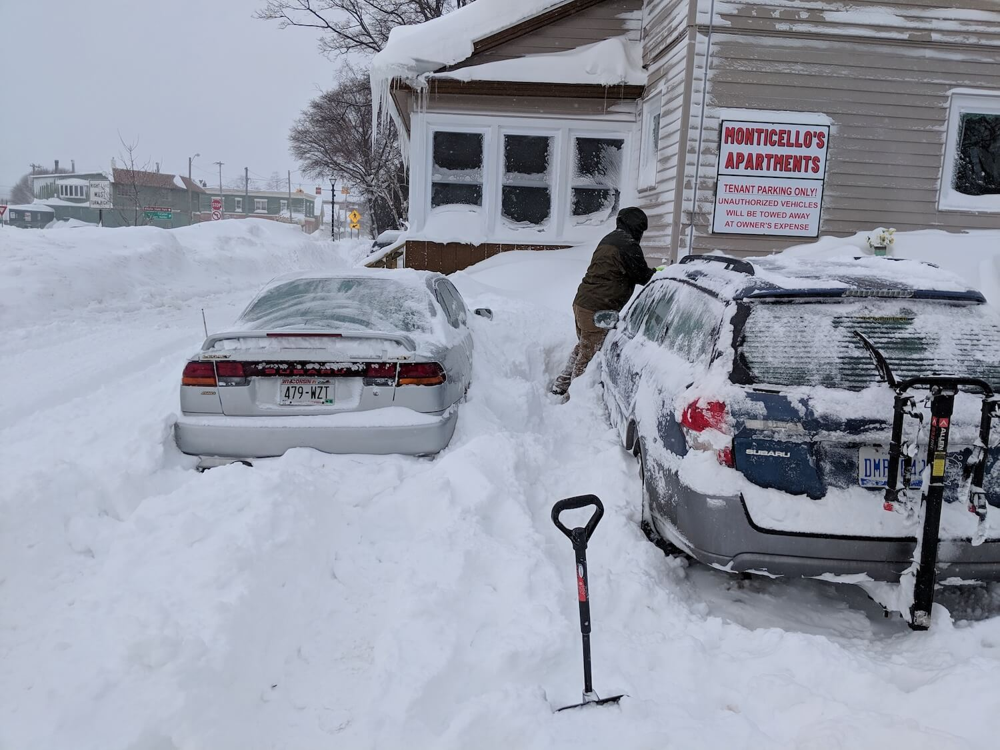
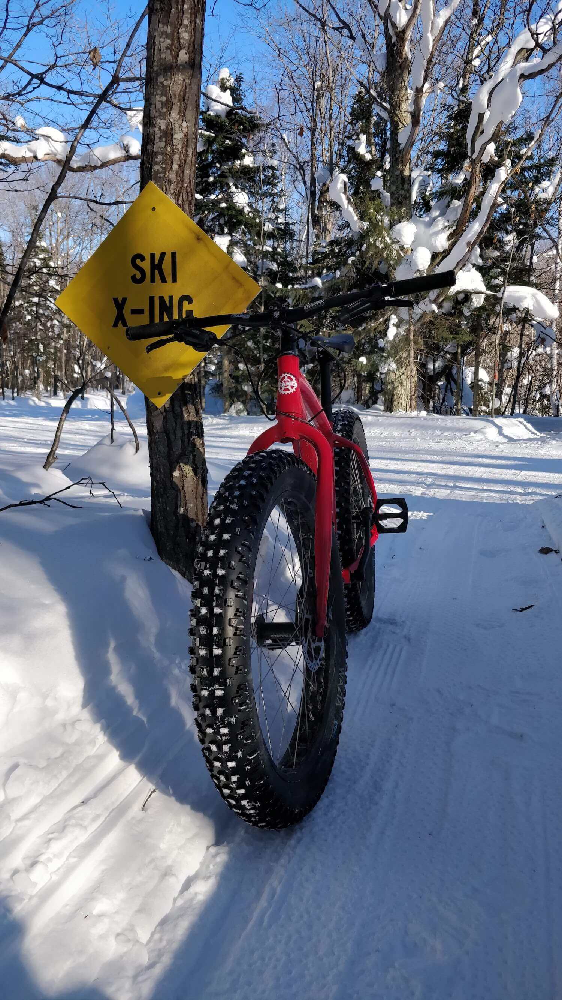

I met some cool people during undergrad. Shoutout to Kristoff, Gary, Parker,
Chris, Emily, & Richy for providing photos. Credited where applicable.
Without further ado, let’s get started.
or press an image to toggle it

Kristoff & I clearing off our cars following the worst snow storm
during my time at Michigan Tech (2019). Kristoff’s Subaru Legacy on
the left and my Subaru Outback
on the right. Yes, I do use that bike rack (more on that later).
Kristoff
Phew, that snow was overwhelming—let’s switch seasons. An autumn
trip to nearby Hungarian Falls with Gary & Parker during 2016.
Gary
That same trip as above with me practicing my DSLR skills.
Gary
Keeping with the autumn theme: Michigan Tech’s trails. Taken fall
2018 featuring my 1998 Gary Fisher Joshua Z0 I bought off Kristoff for
$300. Not pictured: my friend who foolishly ran too low tire pressure
and flatted up the trail.
Me
Let’s mix it up a bit. I snapped this photo of not-my-Subaru parked
next to not-my-Lotus in Ferndale, MI.
Me
A young Paul shooting sunset photographs at McClain State Park between
Hancock and Calumet, MI.
Parker
Ah, here’s an excellent one. Parker came to visit during my last
semester so we (me, Kristoff, and Parker) made smash burgers. Potato buns,
carmelized onions, a mix of potato and sweet potato fries coupled with
80/20 ground beef (or Beyond™ patties) is a recipe for success.
Not pictured: lots of smoke that really should’ve set off the alarms.
Kristoff
üöß üõë Pit stop #1
Congrats on making it this far—that’s no small feat.
Friendly reminder to stretch your legs, grab another cup of caffeine, and
sit back and enjoy the show.
See, I told you I use the bike rack. Kristoff & I picked up
rental fat bikes in Calumet, MI to go riding at the nearby Swedetown
trails.
Kristoff
More proof I (sometimes) bike in the winter. This photo was on an early
revision of the graduation announcements that didn’t make the cut.
Kristoff
My Subaru Outback on Brockway Mountain in Copper Harbor, MI on a foggy
morning. Taken fall 2018 while I was up there doing radio communications
for a downhill and cross-country bike event.
Me
Enjoying a latte at a cafe in Stevens Point, WI.
Me
Can you curve a zero? This collaboration on a whiteboard in one of the
engineering buildings at Michigan Tech argues otherwise.
Me
I spend a lot of time at coffee shops & cafes. One of my
favorites is Cafe Rosetta in Calumet, MI. This photograph features
Kristoff & I doing some finals week “studying.” Take note of my
Patagucci™ sweater and REI vest.
Kristoff
Another winter biking outing with Kristoff. Take note of Kristoff’s
finger AKA the blurry blob o’ doom.
Kristoff
Parker & I at BLED FEST 2019 in Hartland, MI.
Parker

A solo trip to the Swedetown trails near Calumet, MI. Featuring my
newly-acquired (at the time) Framed Minnesota LTD fat bike.
Me
üöß üõë Pit stop #2
You know the drill at this point. Over half way done.
Another round of smash burgers. This time a joint effort between Kristoff
& I. One of the last meals we cooked together—a last supper of
sorts.
Kristoff
Cooking korean pancakes while on an internship in metro-Detroit.
Kristoff
Kristoff & I got decadent vegan milkshakes at Ale Mary’s
in Royal Oak, MI. Yes, they’re as expensive as they look.
Me (left), Kristoff (right)
A selfie at Swedetown trails after a frigid winter ride.
Me
The longest bike ride I’ve done to date was in May 2019 just after
graduating: La Flèche Du Nord 2019. ~70 miles of riding with ~30
miles of gravel/dirt/sand promised from Houghton to Copper Harbor, MI.
I briefly wrote about it.
Not pictured: my 2L hydration pack & tired legs.
Me
Another winter biking adventure with Kristoff. This time at the Marquette
South Trails.
Kristoff (left), Me (right)
Another winter photo! I tried out the groomed singletrack at Churning
Rapids (near Hancock, MI) this past winter (2019). After I got back,
the sun was setting on my Subaru Outback.
Me
More Subaru! Picking up a TV stand for cheap at a thrift store as the
sun was low in the horizon led to this. something something head
gaskets, am I right?
Kristoff
Another humorous whiteboard drawing. This time courtesy of the Computer
Science dept. at Michigan Tech.
Me
My desk at an internship. Take note of the legit rubber ducky and fidget
spinner.
Me
Me and a cool guy named Will at a bubble tea shop in Ferndale, MI.
Emily #1
I had the opportunity to attend and organize several hackathons throughout
undergrad. The one featured in this photo is Uncommon Hacks 2019 in
Chicago, IL. I did the Houghton to Chicago drive overnight— it’s
a pretty easy 7 hours.
Me
A slide from one of my favorite profs in undergrad: Kit Cischke. Yeah,
it’s supposed to be cryptic.
Me
Another coffee shop I frequent often is North Perk (now Lake Charlevoix
Coffee Company).
Me
Immediately after unpacking and assembling the Framed Minnesota LTD fat
bike I was out behind the apartment finessing the fine details and bedding
the brakes.
Kristoff